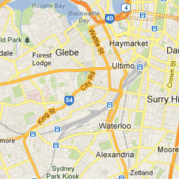

All
Establishments
Geocodes

Map Data
Map data ©2012 Google, Whereis(R), Sensis Pty Ltd
-
Terms of Use
Map Data
Map data ©2012 Google, Whereis(R), Sensis Pty Ltd
Map data ©2012 Google, Whereis(R), Sensis Pty Ltd
Report a map error
Map
Terrain
Satellite
45°
Labels